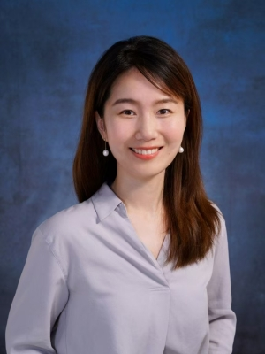

Ye XUE 薛烨

School of Intelligent Systems Engineering
Sun Yat-sen University, Shenzhen, China
Email: xuey57@mail.sysu.edu.cn
Head of PhiLM Lab — towards a more physical AI for a more open world
Physical Fields World Models 3DGS / NeRF Efficient Computing L2O / RL
Introduction
I am an associate professor at the School of Intelligent Systems Engineering, Sun Yat-sen University (SYSU). Before joining SYSU, I was a research scientist at the Shenzhen Research Institute of Big Data and an adjunct assistant professor at the School of Data Science, The Chinese University of Hong Kong, Shenzhen. I received my Ph.D. in Electronic and Computer Engineering from the Hong Kong University of Science and Technology (HKUST), and my B.S. in Communication Engineering from Southeast University (Chien-Shiung Wu Honor College, Advanced Class).
I lead PhiLM Lab (Geometry · Physical Fields · World Models · Intelligent Systems). My research spans physical-field reconstruction and learning, world models, sparse/efficient AI and deployment, and learning-based optimization for real-world decisions.
Education
-
Ph.D. in Electronic and Computer Engineering Sep. 2017 – Nov. 2022Hong Kong University of Science and Technology (HKUST)
-
B.S. in Communication Engineering Sep. 2013 – Jul. 2017Southeast University (SEU), Nanjing — Chien-Shiung Wu Honor College, Advanced Class for Leading Professionals in Engineering
Professional Experience
-
Associate Professor, Ph.D. Advisor Oct. 2025 – presentSchool of Intelligent Systems Engineering, Sun Yat-sen University, Shenzhen
-
Research Scientist Aug. 2022 – Oct. 2025Shenzhen Research Institute of Big Data (SRIBD); adjunct assistant professor, School of Data Science, CUHK-Shenzhen
Research
PhiLM Lab works on teaching AI to understand the physical world beyond shape: physical-field reconstruction and learning × world models, going from physical-field modeling to autonomous decision making. Our work is organized into three directions, from representation to efficient computation to decisions; the wireless world model (we call ours FieldMind) is our main instantiation.
01 Modeling & Generation: Wireless World Model (WWM) 3DGSNeRF
Physically grounded, data-driven models of radio/EM environments that fuse geometry and materials (BIM, point clouds, maps), contextual signals (vision/language, IMU, GNSS), and RF measurements (sweeps/arrays). We combine neural representations (3DGS/NeRF variants, diffusion/energy models, GNNs, neural operators such as FNO/DeepONet/GNO) with PDE and boundary consistency, constitutive relations, and structured sparsity/low-rank priors. The models support editable inversion, uncertainty quantification, and active re-measurement for localized statistical channel modeling and environment-aware communication.
02 Efficient Computing & Deployment: Sparse and Efficient AI CUDACompressionFPGA
Structured sparsity, low-rank, and tensorization across data/features/models/gradients with unified compression and distillation for edge–cloud collaboration and federated training. AI infra and HW/SW co-acceleration (CPU/GPU/CUDA/FPGA) enable efficient inference and reliable on-device deployment of field models and decision policies.
03 Tasks & Decisions: Learning-based Optimization (L2O) GNNRL
Differentiable, learning-augmented solvers (RL/GNN/neural combinatorial optimization) operating on the wireless world model (WWM) for constrained decisions: UAV sensing plans, site placement, beam/power/spectrum allocation, and routing/formation planning. We pursue feasibility guarantees, learned warm-starts, fast cross-scenario adaptation, and edge/federated execution for real-time, certifiable decisions.
Explainable AI (XAI) Theory
Characterizing the generalization bounds and convergence properties of AI methods using high-dimensional statistics and nonconvex optimization.
Recently, I have focused on building FieldMind (our wireless-world-model instantiation), which couples physics-informed field representations with algorithm–system co-design (C++/CUDA/FPGA; edge/federated) to map structural sparsity into solvers and hardware, delivering end-to-end speed/energy gains and rapid replanning.
Current Openings · 2027 Ph.D. Admissions
PhiLM Lab is recruiting Ph.D. students entering in 2027 at the School of Intelligent Systems Engineering, Sun Yat-sen University (Shenzhen campus), on physical-field reconstruction and learning × world models. Start from the direction you find most exciting, and we will take the problem deep together. 中山大学智能工程学院 2027 级博士招生，欢迎相关背景的同学邮件交流。
Research directions
- 01 Modeling & Generation — 3D scene representation; physical-field reconstruction and generation.
- 02 Efficient Computing & Deployment — AI infra, CUDA acceleration and efficient computation; model deployment and inference optimization.
- 03 Tasks & Decisions — learning to optimize, reinforcement learning; planning and execution-policy solving.
Who we are looking for
- Background: computer science, automation, artificial intelligence, communications and electronic information, applied mathematics, or related fields.
- What we value: passion for research, diligence and self-discipline, honesty and integrity, fast learning, and good communication and teamwork.
- A plus, not required: basics of 3DGS, world models, or wireless signals; hardware / PCB or robotics projects; publications or competition experience.
What we offer
- Regular mentoring: weekly group meeting, office hours, and one-on-one guidance.
- Compute and platforms: dedicated GPU compute and API token budget, plus hardware platforms and experimental equipment.
- First-hand real data: data from industry partners, and our own data-collection software/hardware stack with in-house measurement campaigns and evaluation (image, video, sensor, field tests, open datasets).
- Full-cycle guidance: from problem discussion and experiments to paper writing and submission.
- International exposure: international conferences, short-term visits, and joint training.
- Industry and academia: collaborations with leading companies and frontier startups on real R&D problems, and active domestic and international academic exchange. Industrial R&D or academic exploration — we are happy to discuss your long-term path.
How to apply
- Email xuey57@mail.sysu.edu.cn with the subject
2027入学博士申请－姓名(2027 Ph.D. Application – Your Name). - Attach your CV (with major ranking), transcripts, and research outputs if any.
- Postdoc fellows, master's students, research assistants, and interns are also welcome on a rolling basis;
use the subject
Apply-Name-Position-StartTime. - Formal application and admission requirements follow the official notices of SYSU and the school.
The Chinese recruitment posters are on the group page; my expectations for postgraduate students are on the resources page.
Selected Recent Publications
Wireless WM3DGSY. Xue, Y. Wang, X. Shao, Q. Yan, S. Zhang, and T.-H. Chang, “Point-Cloud-Assistant Localized Statistical Channel Prediction by Tangent Gaussian Splatting,” IEEE Transactions on Wireless Communications, vol. 25, pp. 17816–17830, 2026.
Wireless WMChannel ModelingXinyu Qin, Qi Yan, Shutao Zhang, Bingsheng Peng, Ye Xue†, and Tsung-Hui Chang, “A Measurement Report Data-Driven Framework for Localized Statistical Channel Modeling,” IEEE Transactions on Mobile Computing, 2026.
Wireless WMRadiance FieldBingsheng Peng, Shutao Zhang, Xi Zheng, Xinyu Qin, Ye Xue†, and Tsung-Hui Chang, “RF-LSCM: Pushing Radiance Fields to Multi-Domain Localized Statistical Channel Modeling for Cellular Network Optimization,” IEEE Transactions on Mobile Computing, accepted Mar. 2026.
Wireless WM3DGSYiheng Wang, Ye Xue†, Shutao Zhang, and Tsung-Hui Chang, “RadCloudSplat: Scatterer-Driven 3D Gaussian Splatting with Point-Cloud Priors for Radiomap Extrapolation,” IEEE INFOCOM 2026.
L2OXuanhao Pan*, Chenguang Wang*, Chaolong Ying, Ye Xue, and Tianshu Yu, “Beyond the Heatmap: A Rigorous Evaluation of Component Impact in MCTS-Based TSP Solvers,” ICLR 2026.
L2OYeqing Qiu, Ye Xue†, Akang Wang, Yiheng Wang, Qingjiang Shi, and Zhi-Quan Luo, “ROS: A GNN-based Relax-Optimize-and-Sample Framework for Max-k-Cut Problems,” International Conference on Machine Learning (ICML 2025).
Wireless WMChannel ModelingYiheng Wang*, Ye Xue*†, Shutao Zhang, and Tsung-Hui Chang, “GNN-based Structured Bayesian Inference for Multi-grid Localized Statistical Channel Modeling,” IEEE Transactions on Wireless Communications, 2025.
L2OGenerativeShutao Zhang, Ye Xue†, Zhiwei Tang, Hao Wang, Chao Shen, Qingjiang Shi, and Tsung-Hui Chang, “Robust Network Optimization by Deep Generative Models and Stochastic Optimization,” IEEE Transactions on Wireless Communications, 2025.
L2OYeqing Qiu, Chengpiao Huang, Ye Xue†, Zhipeng Jiang, Qingjiang Shi, Dong Zhang, and Zhi-Quan Luo, “Relaxation-free Min-k-partition for PCI Assignment in 5G Networks,” IEEE Transactions on Signal Processing, 2025.
L2OYeqing Qiu, Ye Xue†, Zhipeng Jiang, and Qingjiang Shi, “Relaxed Gradient Projection for PCI Assignment in 5G Network,” The 14th IEEE/CIC International Conference on Communications in China (ICCC 2025).
Wireless WMChannel ModelingXinyu Qin, Shutao Zhang, Bingsheng Peng, Ye Xue†, Chao Shen, Qiliang Xie, Yuk Ngai Lee, and Tsung-Hui Chang, “A Deep Learning Framework for Large-Scale Localized Statistical Channel Modeling,” IEEE GLOBECOM 2025 Workshop.
Wireless WMMultimodalYiheng Wang, Shutao Zhang, Ye Xue†, and Tsung-Hui Chang, “Multi-Modal Neural Radio Radiance Field for Localized Statistical Channel Modelling,” IEEE GLOBECOM 2025 Workshop.
[* equal contribution, † corresponding author] Full list of publications.
Funding
-
Enterprise Collaboration Project 2026 – 2027RF-3DGS grid-free electromagnetic foundation model · PI
-
Shenzhen Natural Science Foundation, Youth Project (Class C) 2026 – 2028Key technologies of multi-source multi-modal intelligent channel modeling for wireless network optimization · PI
-
NSFC Young Scientists Fund 2024 – 2026Digital-twin-based radio environment reconstruction for network optimization · PI
-
National Key R&D Program of China 2023 – 2026Environment-aware prediction for 6G IoT networks · Sub-task PI
-
SRIBD Project 2023 – 2024GNN-based statistical channel modeling for network optimization · PI
-
National Key R&D Program of China 2022 – 2027Theory of learning to optimize and applications in network optimization · Key member
-
Guangdong Major Project 2023 – 2028Key technologies of 6G network based on environment enhancement · Core member
Honors and Awards
- Specific Talent, Shenzhen “Pengcheng Peacock Program,” 2023.
- Postgraduate Studentship, Hong Kong University of Science and Technology (HKUST), 2017.
- First Prize, Excellent Undergraduate Thesis of Jiangsu Province, 2017 (one of 5 awardees across SEU).
- Baosteel Scholarship, 2016.
- Microsoft Research Asia Young Scholar Award, 2015 (one of 32 awardees across Mainland China).
- RoboCup Kidsize, National Level, 2nd/3rd Place, 2015.
Academic Service
- Session Chair — International Workshop on Mathematical Issues in Information Sciences, Shenzhen, 2022.
- Program Committee — DTMS 2023, International Workshop on Digital Twin-Empowered Mobile Networks, Systems and Applications (co-located with MobiSys), Helsinki, Finland.